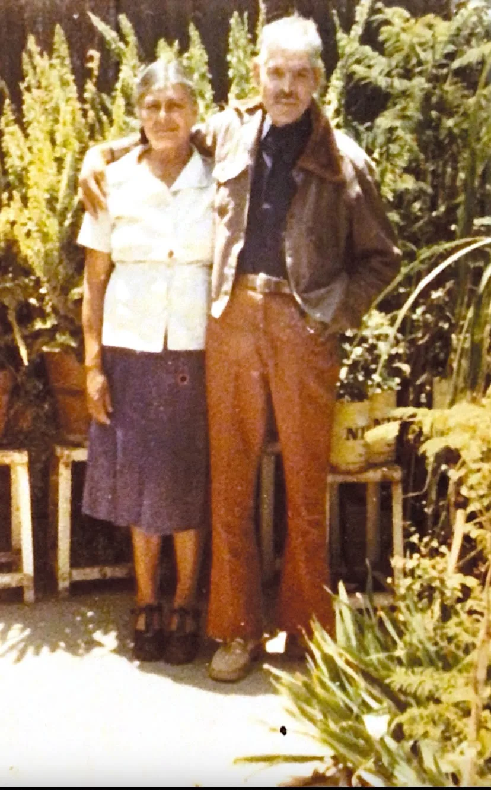
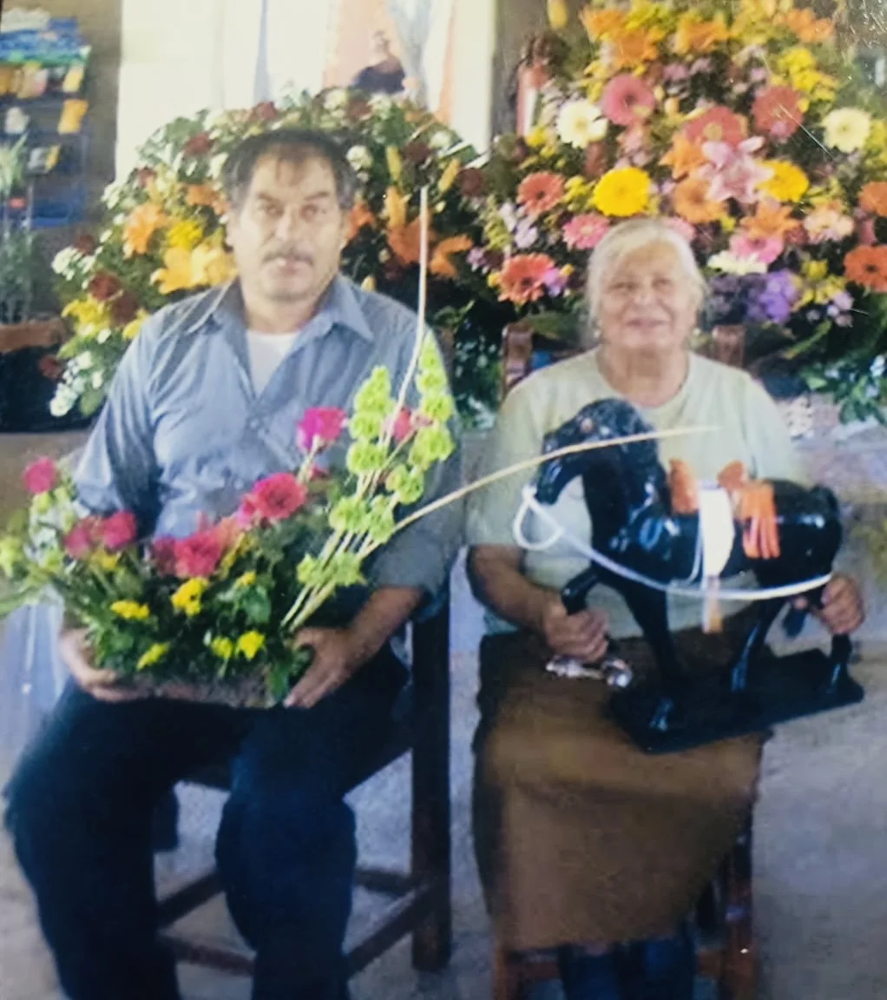
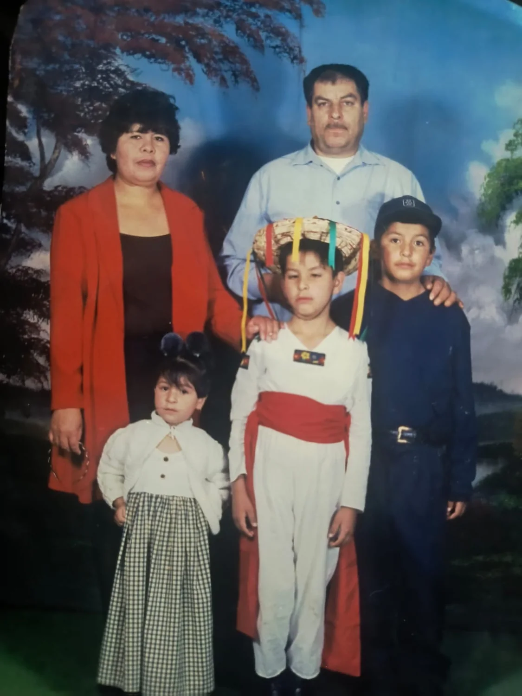
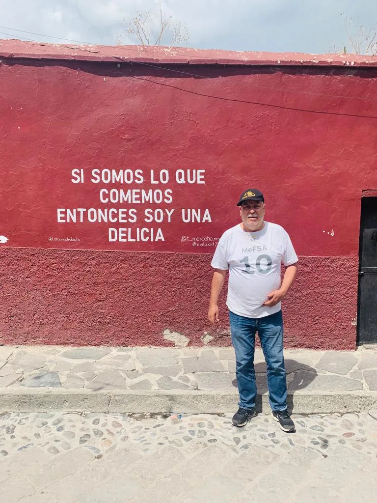
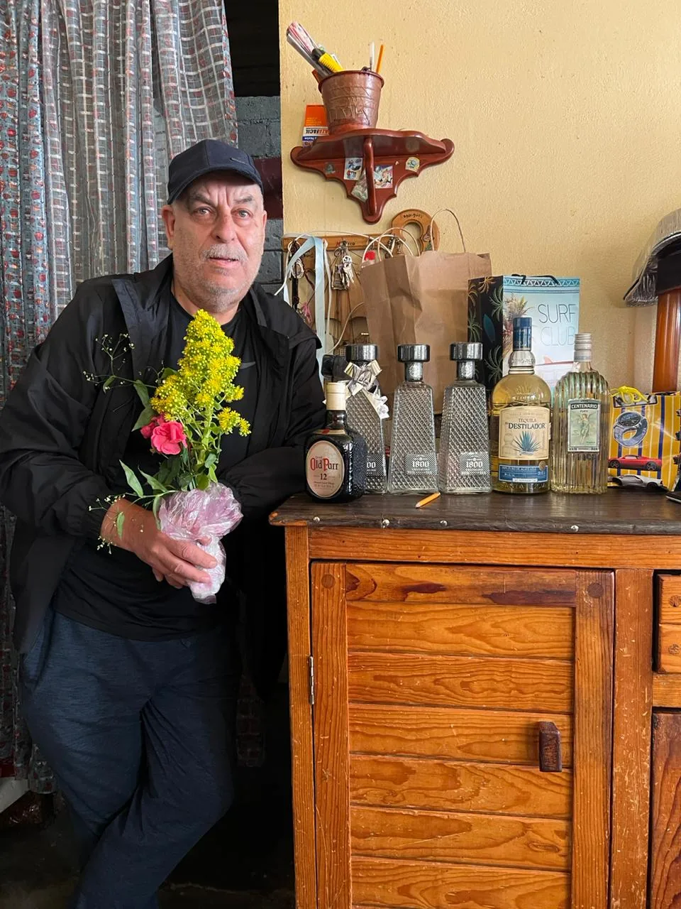
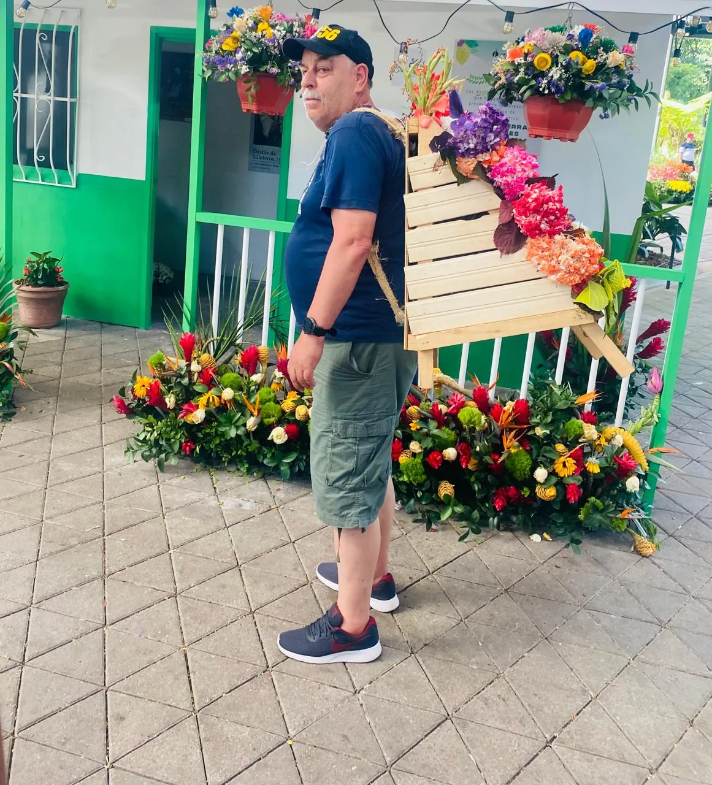
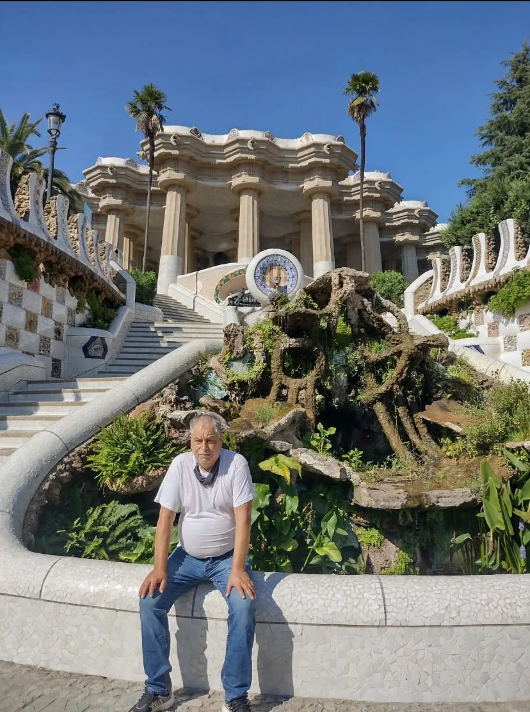
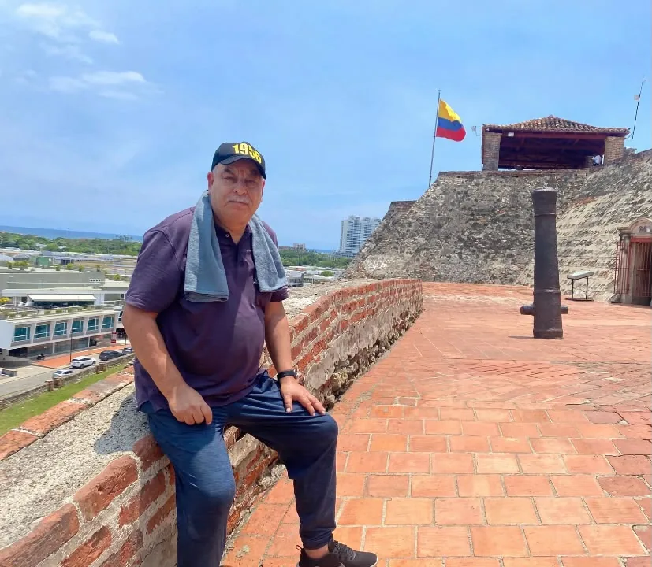

1956
Nacieron todas las flores.
UNA VIDA PARA CELEBRAR
70
Una historia de amor, familia, recuerdos y gratitud. Nos dará mucha alegría compartir contigo este día tan especial.
17 · OCTUBRE · 2026
SUS RAÍCES
Toda historia comienza en casa. De ahí nacen los recuerdos, los valores y el amor que acompaña toda una vida.


Las raíces nos recuerdan de dónde venimos y el amor que nos sostiene.
MI FAMILIA
El amor cambia de forma con los años, pero siempre encuentra la manera de quedarse.

UNA VIDA EN EL TIEMPO
Cada etapa dejó algo para recordar.
1956
Nacieron todas las flores.
1974 · 18 AÑOS
Mayoría de edad, primeros amores, música de The Beatles y José José.
1986 · 30 AÑOS
Mundial de México 86. Una década de esfuerzo y familia.
1994
Boda por la iglesia.
2006 · 50 AÑOS
¡Medio siglo! Fiesta en grande y jubilación.
2018
Nace su primer nieto.
2026 · 70 AÑOS
7 décadas · miles de historias · 3 generaciones





Desliza
LA CELEBRACIÓN
17 · OCTUBRE · 2026
Parroquia de San Antonio de Padua
Calle 9 y Avenida 6, Las Águilas
Ciudad Nezahualcóyotl
4:00 P. M.
Salón Jessy
Agustín de Iturbide 41 y 43, Loma Bonita
Ciudad Nezahualcóyotl
6:00 P. M.
CÓDIGO DE VESTIMENTA
Un estilo cómodo, cuidado y elegante para compartir esta ocasión especial.
Tu presencia hará aún más especial esta celebración. Por favor confirma tu asistencia.
CONFIRMO MI ASISTENCIA